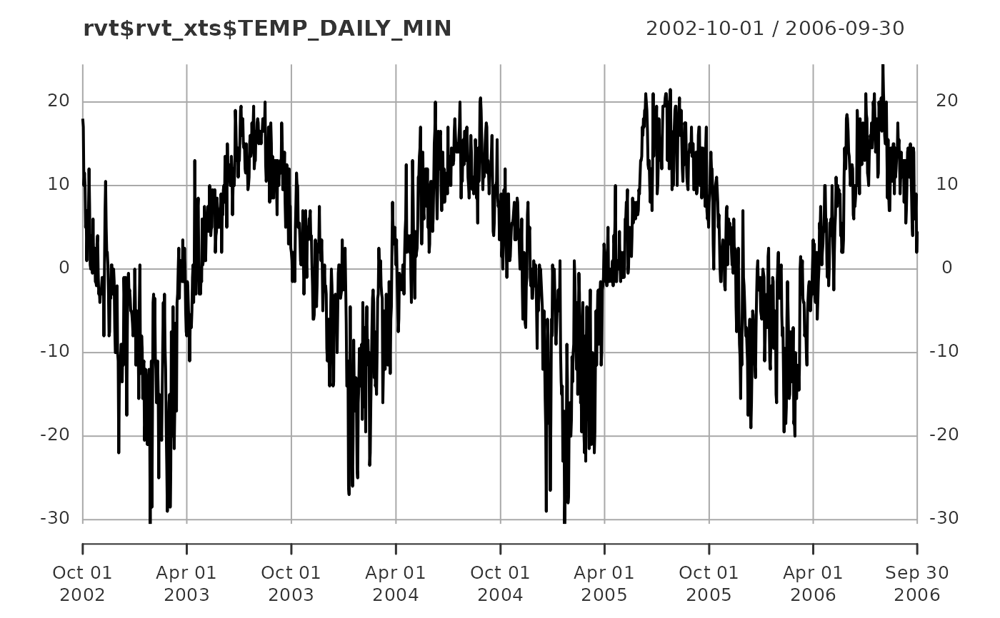

This routine reads in a valid Raven time series input (.rvt) file and returns the information as an xts time series and metadata data frame.
rvn_rvt_read(filename, tzone = "UTC")path/name of the .rvt file (with .rvt extension included)
string indicating the timezone of the data provided in filename (default "UTC")
Returns a list with two objects:
xts formatted time series with data
data frame with a 'param' and 'value' column providing rvt metadata (number of points, time interval, subbasin ID, etc.)
All rvt data types available in Raven are supported (e.g. :MultiData, :Data, :ObservedData,
:BasinInflowHydrograph). This is handled by the mappings provided in the data("rvn_rvt_mappings_data")
function, and additional support for other rvt types can likely be included by making updates
to that function with modifications to the somewhat generic read function here.
It does NOT support the master .rvt file with :Gauge or :GriddedForcing commands, only the reading of time-series based .rvt files with a single time series block within the file.
The timezone is provided by the tzone argument as "UTC" by default, and should be adjusted by the user to the local time zone as needed, based on the model run.
# read in rvt file
system.file('extdata','GlenAllan.rvt',package="RavenR") %>%
rvn_rvt_read(.) -> rvt
plot(rvt$rvt_xts$TEMP_DAILY_MIN)
